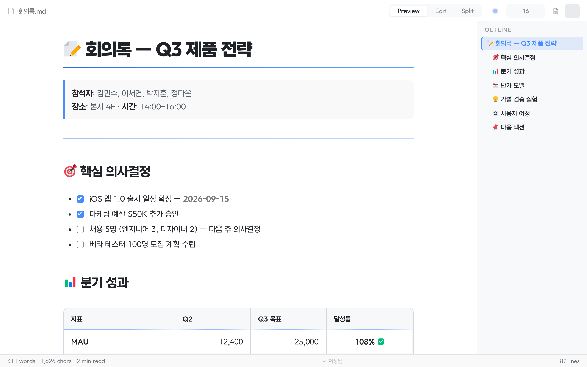
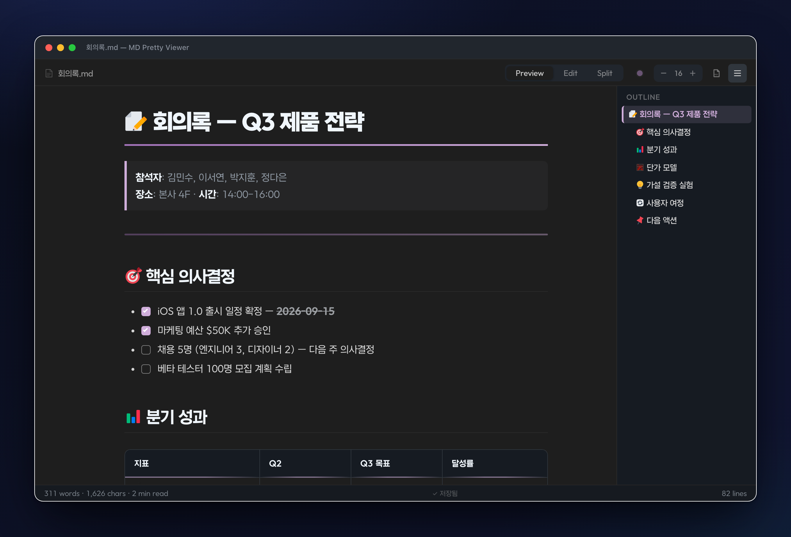

Demo 체험하기Try Live Demo
프리뷰에서 바로 편집합니다 — 블록을 클릭해 고치고, ＋로 삽입하고, 드래그로 옮기세요.
13가지 테마 · LaTeX 수식 · Mermaid · PDF 내보내기 · 한글 폰트 번들. 회의록부터 제안서까지.
Edit right in the preview — click a block to change it, ＋ to insert, drag to reorder.
13 themes · LaTeX math · Mermaid · PDF export · Korean fonts bundled. From notes to proposals.


렌더된 화면 그대로 블록을 클릭해 수정. 저장하면 자동으로 마크다운으로 되돌아갑니다. Notion처럼.Click a rendered block and edit it in place — it round-trips back to clean markdown on save. Notion-style.
＋로 텍스트·제목·리스트·표·코드 삽입, ⠿로 드래그해 순서 변경·복제·삭제. / 슬래시로 타입 변환.＋ inserts text, headings, lists, tables, code; ⠿ drags to reorder, duplicate, delete; / converts block type.
셀을 편집하며 행·열 추가·삭제, 열 정렬 전환. Tab으로 다음 셀, 마지막 셀에선 새 행 자동 추가.Add/remove rows & columns and cycle column alignment while editing a cell. Tab hops cells; the last cell adds a row.
체크박스를 클릭하면 원본이 [ ]↔[x]로 토글. 링크를 클릭하면 텍스트·URL 편집 팝오버.Click a checkbox to toggle [ ]↔[x] in the source; click a link to edit its text & URL in a popover.
Preview, Edit, Split. Cmd+E로 토글. Split은 앵커 기반 스크롤 동기화.Preview, Edit, Split. Cmd+E to toggle. Split has anchor-based scroll sync.
헤딩, 볼드, 이탤릭, 코드, 링크, 리스트. 선택 후 버튼 클릭이면 끝.Headings, bold, italic, code, links, lists. Select text, click a button.
H1~H4 구조를 사이드바에 표시. 클릭하면 해당 위치로 이동.H1-H4 hierarchy in a sidebar. Click to smooth-scroll to any section.
highlight.js 기반. 테마 색상에 맞춰 코드 색도 자동 변경.Powered by highlight.js. Code colors adapt to your theme.
12px ~ 24px. 상단바에서 바로 조절. 설정 자동 저장.12px to 24px, adjustable from the toolbar. Settings persist.
테이블, 체크박스(클릭 토글), 취소선. GitHub Flavored Markdown 완벽 호환.Tables, clickable checkboxes, strikethrough. Full GitHub Flavored Markdown.
Edit / Split 모드에서 왼쪽에 줄 번호 표시. "있는 듯 없는 듯" 미니멀.Line numbers appear in Edit/Split mode. Minimal, unobtrusive.
리스트 항목에서 Enter 치면 자동으로 다음 마커 생성. 번호도 자동 증가.Enter in a list auto-inserts the next marker. Numbered lists auto-increment.
툴바·상태바·아웃라인 숨기고 글에 집중. 한 번 클릭으로 Zen 모드.Hide toolbars and distractions. One click into Zen mode.
프리뷰 모드에서 인-페이지 검색. 매치 하이라이트 · Enter로 이동 · 수식·표 안까지 검색.In-page search with match highlight. Enter/Shift+Enter to navigate. Works across text, tables, and math.
A4/Letter · 세로/가로 · 여백 · 헤더 · 페이지번호 선택. 설정 저장. 스마트 페이지 분할.A4/Letter · portrait/landscape · margins · header · page number — all configurable, choices persist.
이미지 클릭 → 풀스크린. 휠로 확대 · 더블클릭 2.5× · 드래그 패닝 · ESC 닫기.Click any image → full-screen. Wheel to zoom · double-click 2.5× · drag to pan · ESC to close.
스크롤 위치에 따라 현재 섹션이 아웃라인에서 강조. 긴 문서에서 위치 파악.Outline highlights the current section as you scroll, with auto-scroll to keep it visible.
텍스트 선택 후 URL 붙여넣기 → [선택텍스트](url) 자동 변환.Select text → paste a URL → auto-becomes [selected](url) markdown link.
넓은 표는 자동 wrapper로 가로 스크롤. 가장자리 그림자 힌트. PDF에선 풀 너비로 인쇄.Wide tables auto-wrap in a horizontal scroll container with edge-shadow hints. Full width in PDF.
$E=mc^2$ 인라인, $$\int x\,dx$$ 블록 수식. KaTeX 번들로 오프라인 동작.Inline $E=mc^2$ and block $$...$$ equations with bundled KaTeX. Works offline.
```mermaid 코드 블록을 자동으로 시퀀스·플로우차트·간트 차트로 렌더링.```mermaid blocks auto-render as sequence, flowchart, Gantt diagrams. Lazy-loaded.
줄 시작에서 / 입력 → 17개 명령어 메뉴 (h1, code, table, note, mermaid 등). Notion 스타일 UX.Type / at line start → 17-command menu (h1, code, table, note, mermaid…). Notion-style UX.
매치 카운트, 이전·다음, 전체 바꾸기. 모든 모드에서 동작.Match count, prev/next, replace all. Works in any mode.
:::note, :::warning, :::tip 등 8가지 강조 박스. 색상·아이콘 자동.:::note, :::warning, :::tip, etc. 8 styled callout boxes with color & icons.
[^1] 참조 + [^1]: 정의 → 하단 자동 섹션 생성. 양방향 백링크.[^1] references with [^1]: defs auto-build a footnotes section with bidirectional backlinks.
아래 점을 눌러보세요. 이 페이지 전체 색상이 바뀝니다.
VS Code 라이트/다크 모드에 맞춰 자동 최적화됩니다.
Click any dot below — this entire page will change color.
Auto-optimized for VS Code light / dark / high-contrast modes.
VS Code Marketplace에서 md pretty viewer 검색, 또는: Search md pretty viewer in VS Code Extensions, or run:
code --install-extension innohi.md-pretty-viewer
또는 VS Code → Extensions → ... → Install from VSIX Or: VS Code → Extensions → ... → Install from VSIX
무료이고 오픈소스입니다. 피드백은 GitHub Issues에. Free & open source. Feedback welcome on GitHub Issues.
다운로드 v1.0.29Install v1.0.29